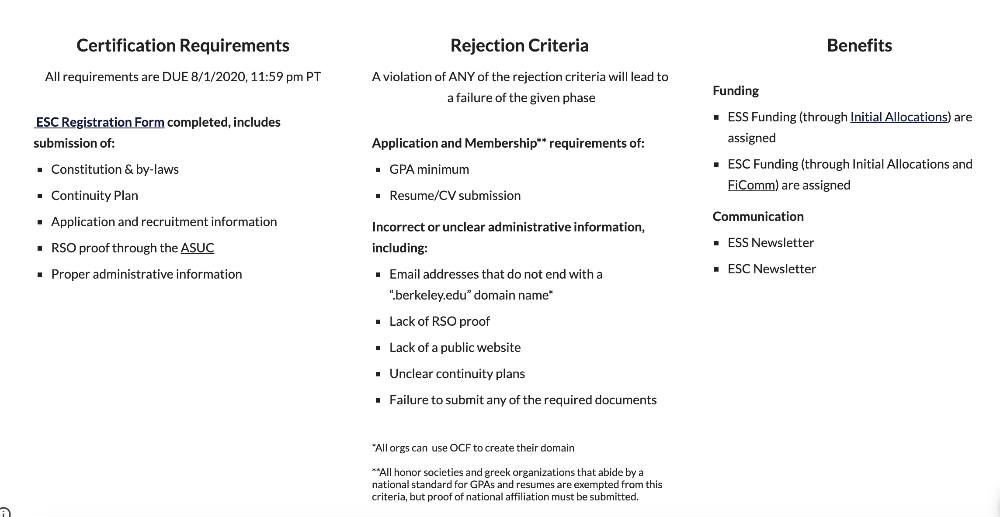
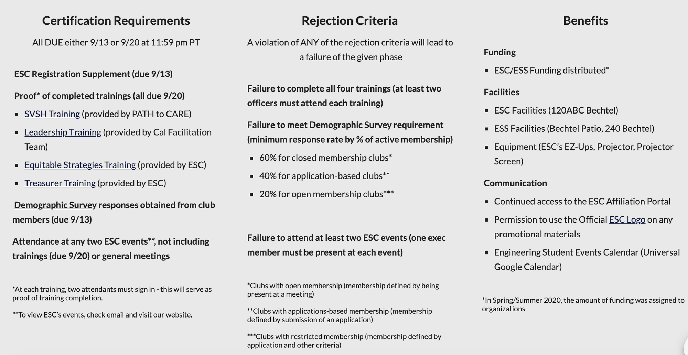

Affiliation Process
If you are interested in creating a new club that is affiliated with ESC, you can start by creating a new registered organization (RSO) under the LEAD center. You can find detailed instructions at the following link: https://lead.berkeley.edu/create-an-org/. Once your club is an RSO, you will be eligible to apply for ESC affiliation in spring of 2021.
ESC is committed to supporting our affiliated organizations in the following ways:
Resources
Visibility
Validation
If you have any questions, please email evp@esc.berkeley.edu
Spring/Summer 2020

Certification Requirements. All requirements are due 8/1/2020, 11:59 pm PT. ESC Registration Form completed, includes submission of:
- Constitution and by-laws
- Continuity Plan
- Application and recruitment information
- RSO proof through the ASUC
- Proper administrative information
Rejection Criteria. A violation of any of the rejection criteria will lead to a failure of the given phase. Application and Membership requirements of (all honor societies and greek organizations that abide by a national standard for GPAs and resumes are exempted from this criteria, but proof of national affiliation must be submitted):
- GPA minimum
- Resume/CV submission
Incorrect or unclear administrative information, including:
- Email addresses that do not end with a ".berkeley.edu" domain name (all orgs can use OCF to create their domain)
- Lack of RSO proof
- Lack of a public website
- Unclear continuity plans
- Failure to submit any of the required documents
Benefits. Funding:
- ESS Funding (through Initial Allocations) are assigned
- ESC Funding (through Initial Allocations and FiComm) are assigned
Communication:
- ESS Newsletter
- ESC Newsletter
Fall 2020

Certification Requirements. All due either 9/13 or 9/20 at 11:59 pm PT.
- ESC Registration Supplement (due 9/13)
- Proof of completed trainings (all due 9/20; at each training, two attendants must sign in, which serves as proof of completion): SVSH Training (provided by PATH to CARE), Leadership Training (provided by Cal Facilitation Team), Equitable Strategies Training (provided by ESC), Treasurer Training (provided by ESC)
- Demographic Survey responses obtained from club members (due 9/13)
- Attendance at any two ESC events, not including trainings (due 9/20) or general meetings. To view ESC's events, check email and visit our website.
Rejection Criteria. A violation of any of the rejection criteria will lead to a failure of the given phase.
- Failure to complete all four trainings (at least two officers must attend each training)
- Failure to meet Demographic Survey requirement (minimum response rate by percent of active membership): 60% for closed membership clubs, 40% for application-based clubs, 20% for open membership clubs
- Failure to attend at least two ESC events (one exec member must be present at each event)
Benefits. Funding: ESC/ESS Funding distributed (in Spring/Summer 2020, the amount of funding was assigned to organizations).
Facilities:
- ESC Facilities (120ABC Bechtel)
- ESS Facilities (Bechtel Patio, 240 Bechtel)
- Equipment (ESC's EZ-Ups, Projector, Projector Screen)
Communication:
- Continued access to the ESC Affiliation Portal
- Permission to use the Official ESC Logo on any promotional materials
- Engineering Student Events Calendar (Universal Google Calendar)
For more info, view the ESC Affiliation Portal (if your organization has access).